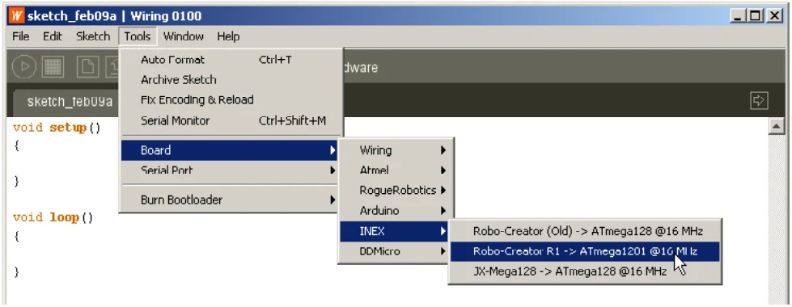
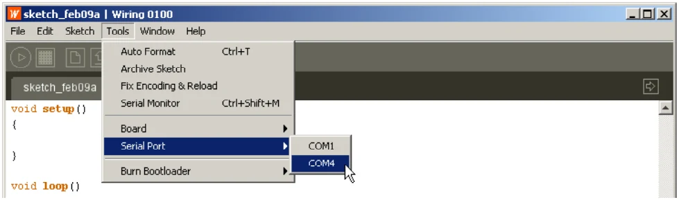
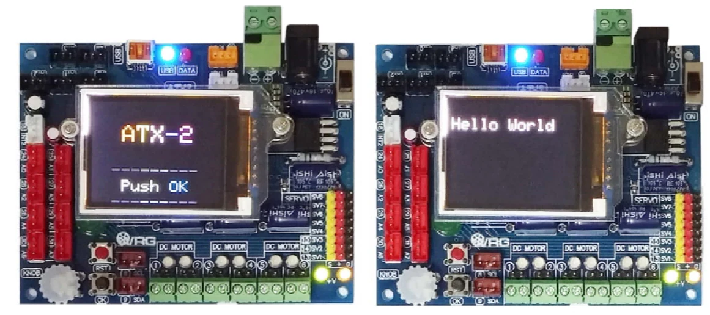

2.3.3 ATX2 with Arduino IDE interface
(1) Open Arduino IDE. Wait for a while. The main window of Arduino will appear.
(2) Choose the suitable hardware by select menu Tools > Board > ATX2;
ATmega644 @16MHz

(3) Select menu Tools > Serial Port to choose the USB serial port of ATX2 board. It is COM3 (for example).

Must do this step for every new connection of the ATX2 board with Arduino IDE
1.0.7
Now the ATX2 controller board is ready for interfacing and code development with the Arduino IDE 1.0.7 (ATX2 customized version)
(4) Type this code below and save as atx2_hello.ino
#include <ATX2.h>
void setup()
{
OK(); // Wait for OK button
glcdClear(); // Clear screen
}
void loop()
{
glcd(1,0,"Hello World"); // Show message
}(5) Upload this sketch to the ATX2 board and run it.
The ATX2 board displays the welcome menu and wait for pressing the OK button. After press the OK button. ATX2’s screen will display message Hello World at the first line of screen.

After upload and run. Wait for pressing After pressing the OK button
OK button
Original manual, pages 15–16